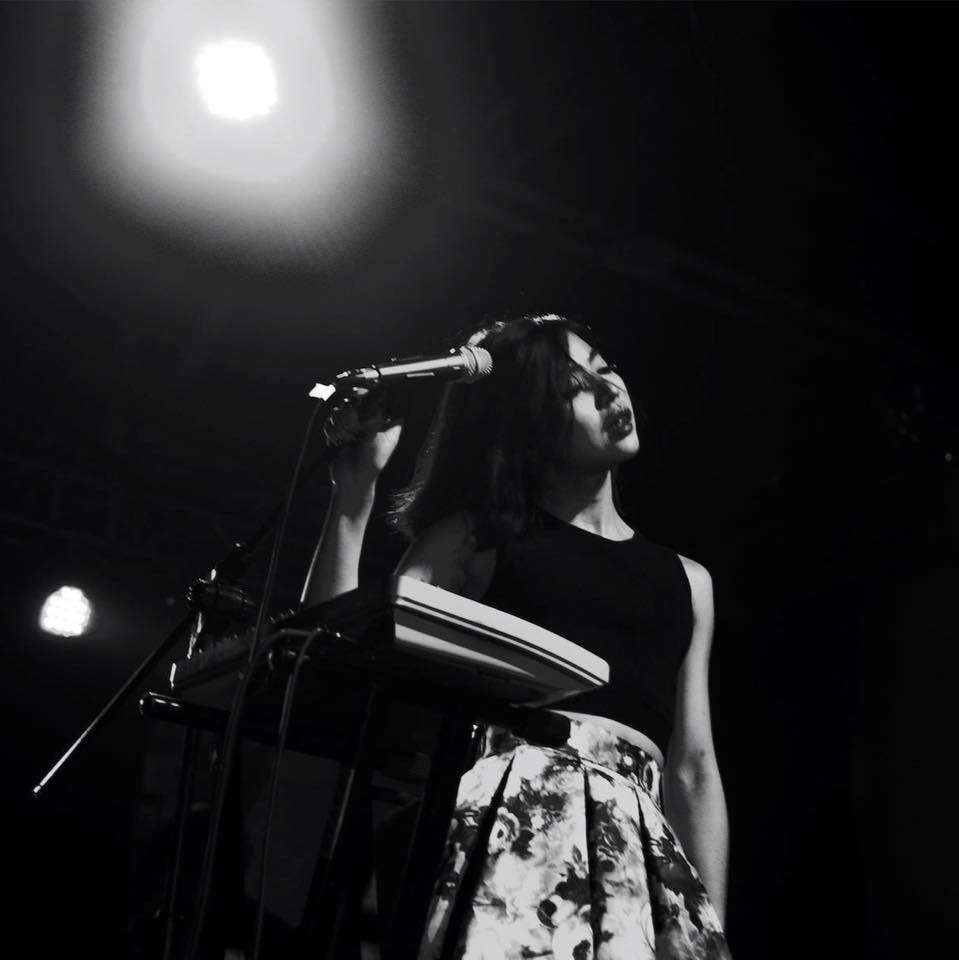

About us
Thanks for your interest in Soundkiss Studio, Taipei Taiwan ROC!
Foreword
This is a legacy web page for Soundkiss, a recording studio I established and ran together with my Taiwanese partner 線世瑋 (Crystal Shien) in Taipei, Taiwan ROC from 2011-2015.

On stage
The same day we closed I had to rush to the airport to catch a flight to London, and so ended 8 years of life in Taiwan.
Only when the plane was taking off did I fully realise everything I was leaving behind.

In session
Years on and many more gigs, recordings and tours under my belt, I still remember that other life. This page is my record.
Selected recordings
Recorded, Mixed and Mastered at Soundkiss
Selected Video Media
Featuring audio recorded, mixed and mastered at our studio
Associated Media and Links
2014 Grammy nomination for Formosa Medicine Show
Recorded using a 1930s inspired 2 channel microphone setup and an all analogue signal path with period true technology, the sessions for Formosa Medicine show were an absolute blast and often incredibly challenging since this was a brand new way of recording for me.
The album also caused a stir when it was nominated for a grammy for 'Best Recording package'
You can view a Taiwanese news report covering the announcement here.
Artist Andrew Wong of Onion Design Studio was later nominated again in 2019 for the Muddy Basin Ramblers album 'Hold that TIger'
Please visit the official Grammy's website for more information.
Golden Melody Award nomination for best Aboriginal Album
The Golden Melody awards are the Taiwanese equivalent of the Grammy awards, and in 2017 the album Ima Lalu Su (你叫什麼名字？) I'd recorded for the Atayal aboriginal artist Inka Mbing 雲力思 was nominated for best aboriginal album
Recordings for this album were made over the course of several trips to Atayal settlements in Taiwan, which are mostly in very remote places at high altitude.
The artist taught her songs to the local children and I made recordings using a simple portable rig on location.
This Wikipedia article records the nomination at the 26th Golden Melody awards.